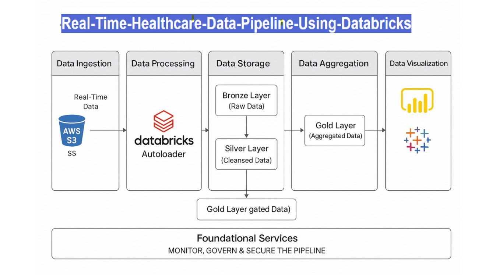

End-to-End-Real-Time-Healthcare-Data-Pipeline-Using-Databricks

Skills Gained
Real-Time Data Ingestion
ETL Pipeline Design and Orchestration
Databricks Workflows and Jobs orchestration
AWS S3 Integration
Python (PySpark)

Description
- Designed and built a complete real-time healthcare data ingestion pipeline using Databricks Delta Live Tables (DLT) and Autoloader.
- Structured the ETL workflow into Bronze, Silver, and Gold layers to progressively clean, validate, and aggregate patient data.
- Utilized Databricks Autoloader to automate ingestion from cloud storage (S3) with schema evolution support, ensuring scalability for new incoming healthcare data fields.
- Implemented data validation, schema enforcement, and error handling mechanisms at each processing stage to maintain high data quality.
- Built streaming transformations that aggregate key patient metrics (e.g., average vitals, number of active patients) in real-time for dashboarding and reporting.
- Ensured the pipeline was scalable, modular, and optimized for high throughput and low latency healthcare use cases.
- Gained strong hands-on experience with Delta Lake architecture, structured streaming, Data Engineering on Databricks, and cloud-native ETL frameworks.